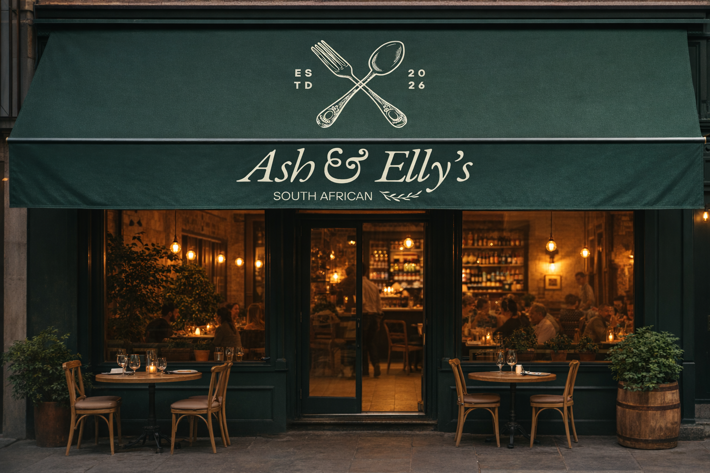
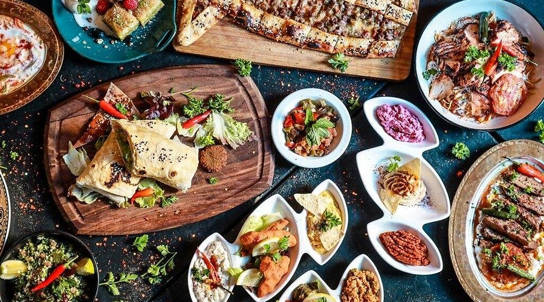
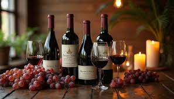
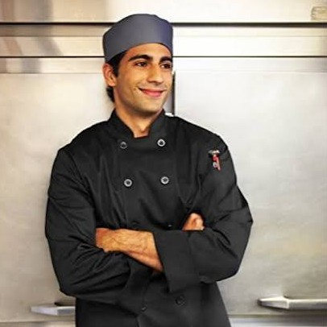
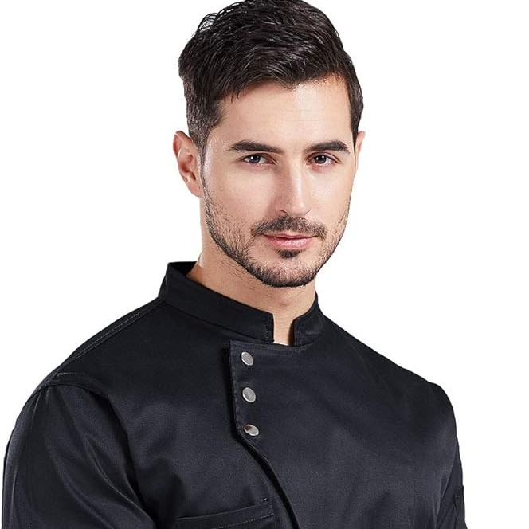
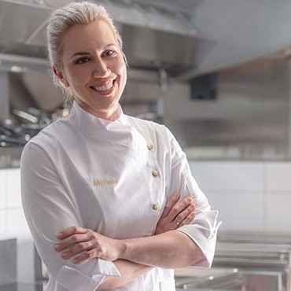
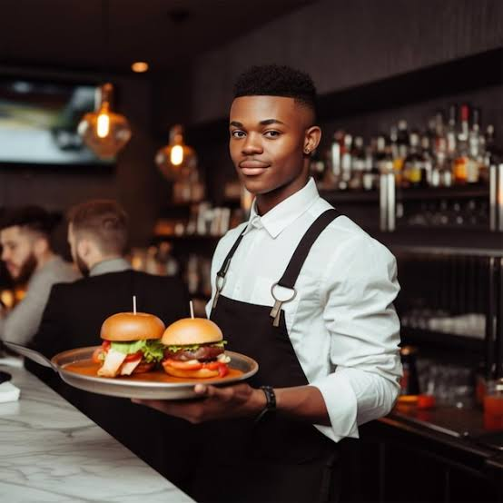
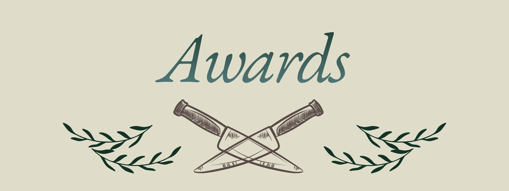

| Ash & Elly's first opened the 23th of January 2025 as a small restaurant based in the Eastern Cape of South Africa. Though we are a fairly new restaurant, the food that we serve is backed up by years of culinary practice and family recipes that are older than some of your grandparents. Every dish we serve is prepared with the utmost detail, precision and most importantly love that we can offer to you, our loyal customers. So we hope that you come check us out and give our food a try. |
 |
|
 |
We are committed to using only the freshest, high-quality ingredients in the preparation of all our dishes. Each meal is carefully crafted on-site by our skilled chefs, ensuring exceptional taste, consistency, and attention to detail in every plate we serve. |
| In addition, we offer a selection of refreshing beverages that perfectly complement our meals, enhancing the overall dining experience for our guests. |
 |

|
 |
Head Chef: My name is Keanu Fourie, and I am the Head Chef at the first branch of Ash n Elly's. I have spent many years working in the culinary industry, gaining valuable experience at various restaurants throughout the Eastern Cape. During this time, I developed a strong understanding of a wide range of cuisines and cooking techniques. I am a trained chef and a graduate of the Culinary Academy of Port Elizabeth. Having grown up in the Eastern Cape, I have always been passionate about the region's food culture and hospitality industry. Joining Ash n Elly's presented an exciting opportunity for a fresh start and a chance to contribute my skills and experience to a growing restaurant. |
| Sous Chef: My name is Stephen Howard, and I am a Sous Chef at the main branch of Ash n Elly's. Although I did not receive formal culinary training, my passion for cooking began at a young age, inspired by my grandmother and aunts who taught me the value of good food and family traditions. Over the years, I developed my skills through hands-on experience and a genuine love for the culinary arts. Ash n Elly's gave me the opportunity to turn that passion into a career, and I am proud to be part of a successful and growing business. I strive to bring quality, creativity, and care to every dish I help prepare. |
 |
|
 |
Sous Chef: My name is Anna van De-Vaal, and I am a Sous Chef at the first Ash n Elly's branch in Bloemfontein. I graduated from Olive Chef School in Bloemfontein and began my culinary career with Ash n Elly's as my first role in the restaurant industry. Despite having no prior professional experience, I worked hard to develop my skills and grow as a chef. Today, I am proud to be part of a talented team and contribute to the restaurant's success. I have always had a passion for food, and my love for exploring different flavors and cuisines inspires the care and creativity I bring to every dish I prepare. |
| Sous Chef: My name is Refilwe Mokwena, and I am a Sous Chef at the first Ash n Elly's branch in the Western Cape. Although I am not formally trained, my passion for cooking began at a young age while preparing meals for my family. Growing up with several brothers, I was often challenged to try new recipes and cuisines, which helped me develop my creativity and skills in the kitchen. I later gained experience working in a number of restaurants, but it wasn't until I joined Ash n Elly's that I found a place that truly felt like home. Today, I am proud to be part of a growing business and enjoy contributing my passion and experience to every dish I create. |

| Waiter : My name is Johan Roeben, and I'm a waiter at Ash n Elly's Bloemfontein branch. | Waiter : My name is Jessica LeRoux, and I'm a waiter at Ash n Elly's Johannesburg branch. |
 Waiter : My name is John Masango, and I'm a waiter at Ash n Elly's Pretoria branch. |

| Award: Ash n Elly's is proud to have received the 2025 Best Start-Up Restaurant Award. Presented to the most outstanding emerging restaurant in the Eastern Cape, this award is a testament to the hard work, dedication, and passion of our team. We are delighted by this achievement and grateful for the support of our valued customers and community. |